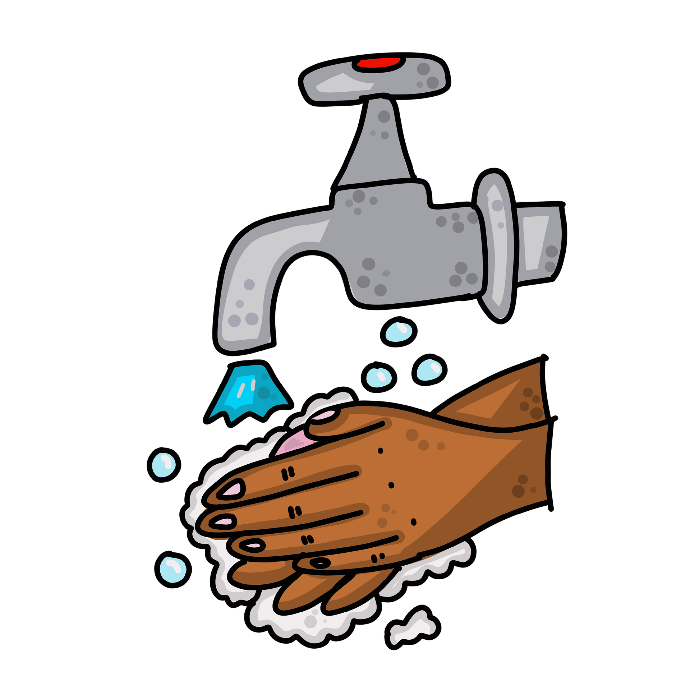
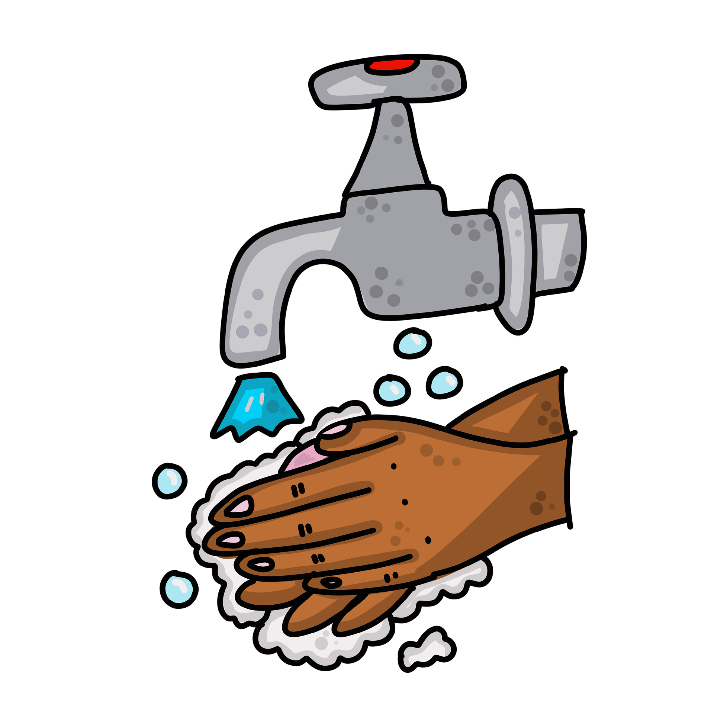

Corona
Virus
 



Memakai Masker
Mencuci Tangan
Menjaga Jarak
Wabah virus Novel Corona dari Cina atau dinamai 2019-nCoV
sedang mengkhawatirkan banyak pihak akhir-akhir ini.Virus yang
tercatat penyebaran pertama kalinya di Wuhan, Cina itu kini
dilaporkan telah menyebar ke berbagai negara.
Kekhawatiran itu datang dari selain banyaknya korban yang
meninggal juga virus covid-19 belum ditemukan vaksinya.
Meskipun begitu pemerintah sudah melakukan beberapa
upaya untuk memutus penularan covid-19. Salah satunya
adalah dengan himbauan menjaga jarak fisik
(physical distancing), kerja dari rumah, belajar di rumah
hingga beribadah dari rumah.
Mengingat belum ditemukannya vaksin terhadap virus tersebut,
maka sebagai pencegahan diharapkan seluruh masyarakat dihimbau
untuk melakukan hal-hal berikut:
- Memakai Masker
- Selalu Mencuci Tangan
- Menjaga Jarak